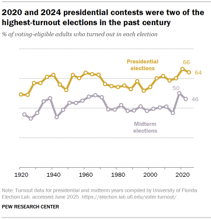
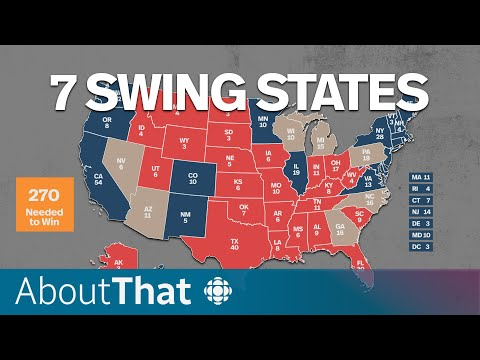
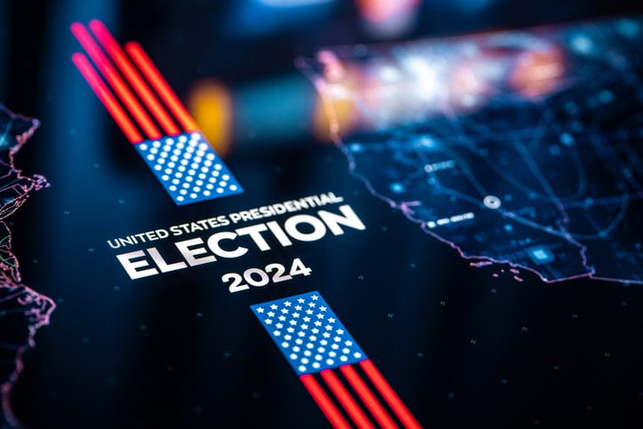

Just how big was Donald Trump’s election victory?
Republican President-elect Donald Trump has said his election victory handed him an “unprecedented and powerful” mandate to govern. He beat Democratic rival Kamala Harris in all seven closely watched swing states, giving him a decisive advantage overall.
Read full story →
Voter turnout, 2020-2024
In the 2024 presidential election, a higher share of Donald Trump’s 2020 voters than Joe Biden’s 2020 voters turned out to vote. Trump also won a higher share of those who had not voted four years earlier. This is different than in 2020 and 2016, when those who didn’t vote in the previous presidential election favored Democratic candidates.
Read more →
Focus on the swing states
All eyes are on the swing states: Arizona, Georgia, Michigan, Nevada, North Carolina, Pennsylvania and Wisconsin.
Read more →
How tech affected “the information environment” of the 2024 election
Advancements in AI technology, and the changing “information environment” undoubtedly influenced how campaigns operated and voters made decisions in the 2024 election, an elections and democracy expert said.
Read more →